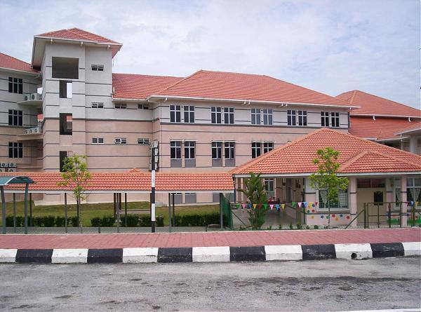
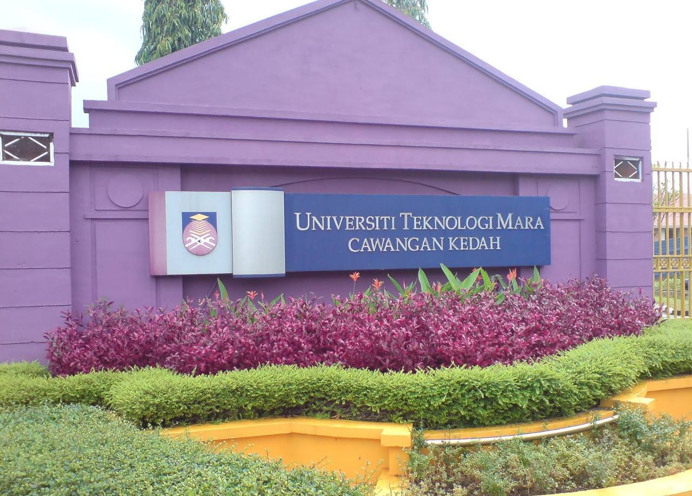

My formal education began at the Sekolah Kebangsaan Bukit Sentosa in Rawang, Selangor.
I attended school there for six years and received a UPSR grade of 3A2B.
Then, from 2015 to 2019, I studied in Sekolah Menegah Kebangsaan Bukit Sentosa 2 at the upper secondary level.
The PT3 results in 2017 were not particularly encouraging, with only 4A 2B 1C 1D, whereas the SPM results were 7A2B.
I began studying Library Management Diloma at UiTM Merbok, Kedah, in 2020, and this is my final year to graduate with a Diploma